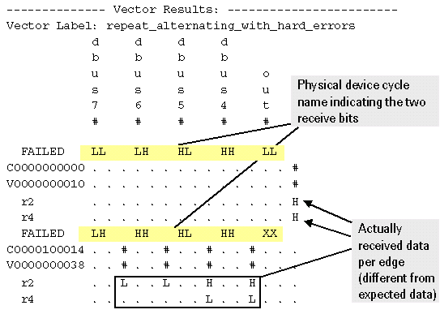

Verbose data representation with fine result granularity
The same results as in Short data representation with fine result granularity, with both FRG enable (fine result granularity) and H/L/I/U (multiple execution) (multishot per-edge detailed result mode) set, are represented in the figure below in verbose mode.
Keep in mind that the result representation below refers to a timing setup based on physical waveforms (no data parameters).

The figure shows the data log with fine result granularity in verbose mode with complete device cycle names. To save space the figure only shows the failing pins. Failing pins are indicated by "#" signs.
The individual receive edges of the failing cycle are listed with edge-specific results below the line with the vector and cycle number (see figure above).
- The "multishot per-edge detailed" verbose result mode shows edge-specific results (L = low received, ^ = High received).
- In "single-shot per-edge P/F" result mode the verbose output shows only pass/fail results (. = passed, # = failed).
Functional changes
- Introduced before SmarTest 6.3.2